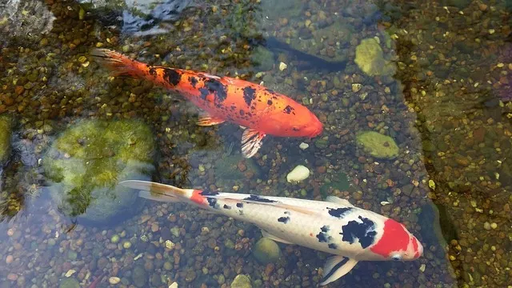
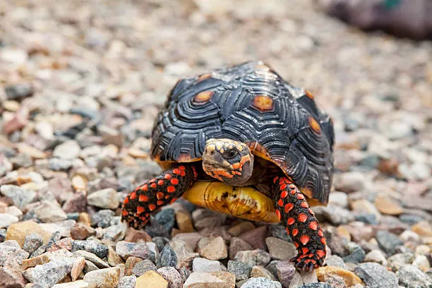

Galeria

Esta es nina, muy tierna y amigable.

Esta es leidy, proctetora de la casa, leal y confiable.

Esta es duquesa la mas tierna de la casa, le gusta derochar amor.

Estas son las carpas de mi pecera.

Este era pako un loro que tube en mi infancia.

Esta fue una tortuga que tambien tube en mi infancia.